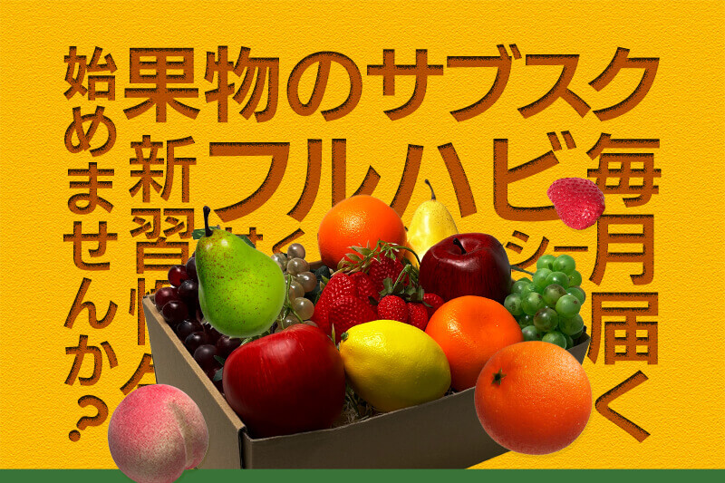

Works — Banner
バナー制作
フルーツサブスク「フルハビ」の新発売告知バナーほか。ターゲット別に訴求を変えた複数案を、2サイズ1組で制作しました。

Purpose制作の目的
「新しいフルーツ習慣を気軽に始めてほしい」という想いを込めた、新発売の告知バナー。ターゲットによって響く訴求は異なるという考えから、コンセプトの異なる複数案を展開しました。
株式会社フルスクが展開するフルーツサブスク「フルハビ」の新発売告知として、リーダーボード（728×90px）とミディアムレクタングル（300×250px）の2サイズを1組に複数案を制作。初回お試しセット（¥1,500・税込送料込）の申込促進、サブスク登録の後押し、ブランド認知の向上を狙いとしています。
Variations3つの提案
各案とも、リーダーボード（728×90px）とミディアムレクタングル（300×250px）の2サイズ1組で制作しました。
A案 — インパクト訴求


ターゲット：20〜40代の幅広い男女層。仕事や家事に忙しい人の目にパッと留まり、興味を引くインパクト重視のデザインを意識しました。
「新しいフルーツ習慣を気軽に始めてほしい」という想いを込め、明るい黄色と青の補色でインパクトを演出。縦組・横組の文字配置で遊び心を加えて視線を誘導し、1,500円の初回お試しセットというお得感と手軽さを前面に出し、「ちょっと試してみたい」と感じさせるデザインを目指しました。
B案 — ナチュラル訴求


ターゲット：全年代。特定の年齢層を限定せず、子どもから大人まで誰もが「おいしそう」「試したい」と思える普遍的な魅力を意識しました。
背景に木の温かみを取り入れ、フルーツ本来の自然さ・みずみずしさを表現。明るい色合いと余白を活かしたシンプルなレイアウトで主役のフルーツを際立たせ、見た瞬間に「新鮮」「ヘルシー」「おいしそう」と直感的に感じられるよう工夫しました。
C案 — ライフスタイル訴求


ターゲット：20〜30代の若い世代。フルーツサブスクを新しいライフスタイルの一部として取り入れ、日常を豊かにしたいと考える層を想定しました。
人物写真を用いることでサービスを身近に演出。ブランドカラーのピンクと緑を基調に、キャッチコピーやサービス説明を視覚的に強調し、気軽に始められること、日々の生活を彩る楽しさが伝わるようデザインしました。
Other Worksその他の制作バナー
サブスクサービス以外のテーマで制作したバナーです。※現在準備中のため、画像と解説は順次追加します。
バナー1 —（タイトル準備中）
ターゲット：（準備中）用途・想定ターゲットをここに記載します。
バナー2 —（タイトル準備中）
ターゲット：（準備中）用途・想定ターゲットをここに記載します。
この作品の制作意図や工夫について、詳しくお話しできます。お気軽にご連絡ください。
お問い合わせ